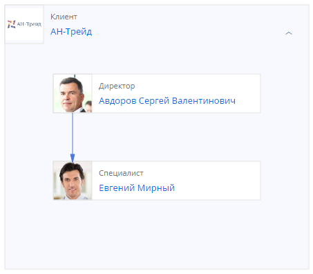
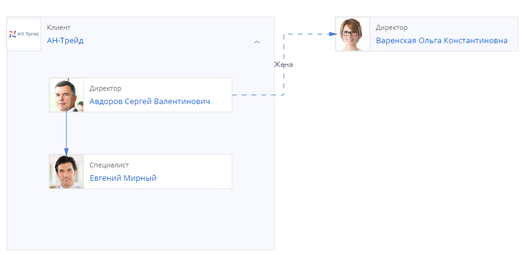
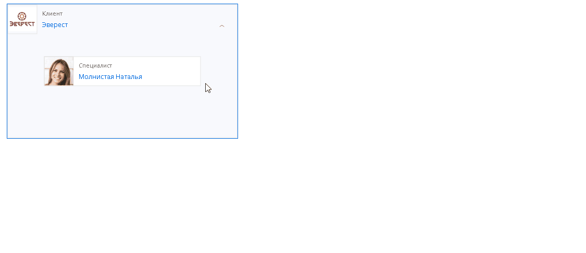
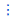

В Creatio вы можете добавлять любые типы взаимосвязей между контактами и контрагентами.
Вы можете отобразить все внутренние и внешние связи контактов и контрагентов в виде диаграммы (Рис. 1). Взаимосвязи могут иметь вертикальную иерархию или же находиться на одном уровне.
Например, для централизованного общения и ведения сделок с группой компаний фиксируйте в Creatio взаимосвязи между контрагентами. Используя наглядную структуру холдинга, вы можете вести взаимодействие как с дочерними компаниями контрагента, так и напрямую с родительским контрагентом. Также вы можете отобразить иерархию сотрудников любого из контрагентов, указать связи между контактами различных контрагентов, в том числе и неформальные.
Взаимосвязи отображаются на вкладке Взаимосвязи страниц контактов и контрагентов. Подробнее: Просмотреть диаграмму.
Для работы с диаграммой необходимо настроить все используемые типы взаимосвязей в справочнике Типы взаимосвязей. Подробнее: Настроить типы взаимосвязей.
После настройки всех необходимых типов взаимосвязей вы можете перейти к формированию диаграмм для контактов и контрагентов. Подробнее: Добавить взаимосвязи на диаграмму.
Также, используя функциональность диаграммы, вы можете сгруппировать контакты по нужным критериям. Подробнее: Группировать контакты.

Просмотреть диаграмму взаимосвязей
Диаграмма отображается на вкладке Взаимосвязи страниц контактов и контрагентов.
Действия с диаграммой
- Перемещать диаграмму: перетяните диаграмму при помощи мыши.
- Развернуть диаграмму на всю страницу: нажмите кнопку .
- Разворачивать и сворачивать блоки диаграммы: используйте кнопки и .
- Удалить элемент или связь на диаграмме: выделите нужный элемент, нажмите и подтвердите удаление.
- Отредактировать связь между блоками контактов и контрагентов: дважды кликните по связи и внесите изменения на открывшейся справа панели настройки.
- Перейти к элементу диаграммы: кликните по нужному элементу.
- Просмотреть детальную информацию: дважды кликните по блоку контакта или контрагента.
Профиль взаимосвязей
Профиль взаимосвязей (Рис. 2) открывается по двойному клику на диаграмме по блоку контакта или контрагента. Профиль взаимосвязей содержит:
-
Общую информацию о контакте или контрагенте, включая адрес и средства связи.
- Группы контактов. Здесь вы можете объединять контакты по произвольным критериям. Используется только для контактов.
-
Связанные контакты и контрагенты. Здесь отображаются все контакты и контрагенты, с которым у текущей записи установлена связь любого типа.
Вы можете отредактировать или удалить связь непосредственно из профиля взаимосвязей. Для этого нажмите
возле соответствующей связи и выберите или соответственно.
Настроить типы взаимосвязей
Чтобы создавать взаимосвязи на диаграмме, предварительно необходимо добавить все возможные варианты связей в справочник Типы взаимосвязей. В данном справочнике уже сформирован список наиболее используемых значений, вы можете просмотреть и дополнить его. Не рекомендуется удалять уже добавленные связи, поскольку они могут использоваться в системе.
Добавить новый тип взаимосвязи
-
Перейдите в дизайнер системы, например, по кнопке .
-
В группе “Настройка системы” нажмите ссылку “Справочники” и откройте наполнение справочника Типы взаимосвязей.
-
Нажмите кнопку Добавить тип взаимосвязи.
-
Заполните поля новой записи в справочнике (Рис. 3).
-
Название — название взаимосвязи, которая будет использоваться на диаграмме.
-
Обратная взаимосвязь — реверсная сторона данной взаимосвязи. Если настраивается взаимосвязь с позицией “Горизонтальная”, то в данном поле необходимо указать эту же запись справочника, создав таким образом ссылку связи, которая ведет на саму себя.
Примеры создания обратной связи приведены ниже. - Тип связи — “Формальная” или “Неформальная”. Подробнее: Параметры взаимосвязи.
- Контакт-Контакт, Контакт-Контрагент, Контрагент-Контрагент или Контрагент-Контакт — установите признаки в одной или нескольких колонках, исходя из того, для какой пары записей актуальна данная взаимосвязь.
- Включить в контейнер — колонка заполняется автоматически и недоступна для редактирования. Установленный признак означает, что на диаграмме контакт будет расположен внутри блока соответствующего контрагента. Подробнее: Параметры взаимосвязи.
- Позиция — местоположение элемента на диаграмме. Подробнее: Параметры взаимосвязи.
-

Параметры взаимосвязи
В Creatio при настройке типов взаимосвязей задаются следующие параметры:
- Тип — параметр, который определяет, является ли связь формально установленной:
-
“Формальная” — используется для создания явной, структурной взаимосвязи. Выберите этот тип для отображения взаимоотношений между руководителями и их подчиненными или управляющими и дочерними компаниями и их филиалами.
Формальную связь между контактами можно установить, если один из них имеет формальную связь с контрагентом.
- “Неформальная” — используется для создания неявной связи. Выберите этот тип для отображения связи, которая может использоваться без иерархического подчинения.
-
- Позиция — параметр, который отвечает за местоположение элемента на диаграмме, в зависимости от того, является ли данная связь иерархической:
- “Горизонтальная связь” — связь между элементами на одном уровне иерархии. Например, между двумя руководителями отделов одной компании.
- “Прямая связь” — связь, которая создает элемент на диаграмме подчиненным тому элементу, для которого выполняется настройка. Например, прямая связь используется во взаимосвязях с типом “Работодатель-Сотрудник”, “Руководитель-Сотрудник”, “Управляющая компания-Филиал”.
- “Обратная связь” — связь, которая создает подчиненный элемент на диаграмме. Например, это связи с типом “Сотрудник-Руководитель”, “Сотрудник-Работодатель”, “Филиал-Управляющая компания”.
- Включение в контейнер — параметр, отвечающий за расположение контактов относительно контрагентов. Определяется автоматически в зависимости от типа и объектов связи (контакт или контрагент).
-
Признак Включить в контейнер установлен всегда для формальных взаимосвязей “Контакт-Контакт”, “Контакт-Контрагент” или “Контрагент-Контакт”.
Например, для формальной связи “Руководитель-Подчиненный” автоматически будет установлен признак в колонке Включить в контейнер и, таким образом, оба контакта будут размещены в рамках блока контрагента АН-Трейд (Рис. 4).
Рис. 4 — Признак Включить в контейнер установлен - Признак Включить в контейнер отключен всегда для неформальных взаимосвязей “Контакт-Контакт”, “Контакт-Контрагент” или “Контрагент-Контакт”, а также для всех взаимосвязей “Контрагент-Контрагент”. Например, для неформальной связи “Родственник-Родственник” признак в колонке Включить в контейнер не будет установлен и, таким образом, контакт на диаграмме будет отображаться вне блока контрагента (Рис. 5).
Рис. 5 — Признак Включить в контейнер снят
-
При настройке параметров важно учитывать следующие особенности:
- Элементы с формальной взаимосвязью на диаграмме, как правило, выстраиваются вертикально: выше или ниже относительно друг друга в зависимости от выбранной позиции.
- Для формальных взаимосвязей между двумя контактами или контактом и контрагентом всегда указывается позиция “Прямая связь” или “Обратная связь”. Такие связи существуют только попарно. Например, если вы создаете взаимосвязь “Головная компания-Дочерняя компания” (прямая связь), то обязательно необходимо добавить еще одну запись для взаимосвязи “Дочерняя компания-Головная компания“ (обратная связь).
- Формальная связь с горизонтальной позицией может существовать только для связи между двумя контрагентами.
- Элементы с неформальной взаимосвязью на диаграмме, как правило, выстраиваются на одном уровне и требуют наличия горизонтальной позиции. Если все же требуется отобразить неформальное подчинение, то это можно сделать, установив для такой взаимосвязи позицию “Прямая связь” или “Обратная связь” по аналогии с формальной связью.
Примеры добавления типов взаимосвязей
Задача решается настройкой пары связей “Юрист” и “Клиент”.
Настройки для связи “Юрист”:
- Название: “Юрист”.
- Обратная связь: “Клиент”.
- Тип связи: “Формальная”.
- Признак в колонке Контакт-Контакт.
- Позиция: “Прямая связь”.
Настройки для связи “Клиент”:
- Название: “Клиент”.
- Обратная связь: “Юрист”.
- Тип связи: “Формальная”.
- Признак в колонке Контакт-Контакт.
- Позиция: “Обратная связь”.
Задача решается добавлением связи “Партнер” со ссылкой на саму себя.
- Название: “Партнер”.
- Тип связи: “Формальная”.
- Признак в колонке Контрагент-Контрагент.
- Позиция: “Горизонтальная связь”.
После сохранения связи добавьте в колонку Обратная связь только что созданную связь “Партнер”.
Добавить взаимосвязи на диаграмму
После добавления всех необходимых типов взаимосвязей в справочник Типы взаимосвязей вы можете перейти к формированию диаграмм для контактов и контрагентов. Рассмотрим добавление взаимосвязей на диаграмму на примере контакта.
Для этого необходимо добавить формальную связь “Руководитель-Сотрудник” и неформальную “Родственник-Родственник”:
-
Перейдите в раздел Контакты и откройте нужную запись.
-
Перейдите на вкладку Взаимосвязи.
Откроется блок с фото сотрудника, его ФИО и названием должности.
-
Выделите блок и нажмите кнопку + справа.
-
Укажите информацию о добавляемой взаимосвязи (Рис. 6):
-
В верхней части профиля взаимосвязей оставьте значение “Формальная”.
-
Тип связи — выберите “Сотрудник-Руководитель”. Доступны для выбора все типы формальных связей.
-
Контакт — выберите нужный контакт из списка доступных.
-
Добавьте комментарий при необходимости. Этот комментарий будет отображен на диаграмме. Если необходимо отредактировать комментарий после его добавления на диаграмму, то кликните два раза на стрелку и на открывшейся панели настройки внесите изменения в поле Комментарий.
Рис. 6 — Указать информацию о взаимосвязи
-
-
Аналогичным образом добавьте неформальную связь с типом “Родственник-Родственник”. Степень родства вы можете указать, заполнив поле Комментарий.
В результате на диаграмму ко всем имеющимся связям будут добавлены новые. Если для этих взаимосвязей ранее были добавлены связи с другими контактами/контрагентами, то они тоже отобразятся на диаграмме (Рис. 7).
В данном примере: у контрагента АН-Трейд есть связь с сотрудниками и другим контрагентом. При установке связи между двумя сотрудниками, работающими в разных компаниях, на диаграмме будут отображены все связи, в том числе и с тем контрагентом, который связан с работодателем одного из сотрудников.
Если необходимо, вы можете установить связь между уже добавленными элементами непосредственно на диаграмме. Для этого выделите один из двух элементов, для которых вы хотите настроить связь, нажмите кнопку , протяните стрелочку ко второму объекту и заполните информацию о взаимосвязи (Рис. 8).
Примеры добавления взаимосвязей на диаграмму
- Старт настройки: страница головного контрагента.
- Добавить: Контрагент.
- Значение в верхней части профиля взаимосвязей: “Формальная”.
- Тип взаимосвязи: “Головная компания-Дочерняя компания”.
- Контрагент: запись дочернего контрагента.
- Старт настройки: страница управляющей компании.
- Добавить: Контрагент.
- Значение в верхней части профиля взаимосвязей: “Формальная”.
- Тип взаимосвязи: “Управляющая компания-Филиал”.
- Контрагент: запись филиала.
- Старт настройки: страница контакта.
- Добавить: Контрагент.
- Значение в верхней части профиля взаимосвязей: “Неформальная”.
- Тип взаимосвязи: “Бывший работодатель-Сотрудник”.
- Контрагент: запись бывшего работодателя.
Группировать контакты
Группы взаимосвязей позволяют объединять контактов на основании любых признаков, даже если между ними не установлены какие-либо другие связи. Вы можете группировать контакты как в пределах организации, так и вне ее. Например, вы можете сгруппировать членов спортивных команд, которые являются сотрудниками разных контрагентов и не имеют других формальных или неформальных связей между собой (Рис. 9).
Принадлежность к группе отображается в профиле взаимосвязей контакта и на диаграмме при наведении мыши на блок данного контакта.
Добавить новую группу
- Перейдите на вкладку Взаимосвязи контакта или контрагента и нажмите кнопку .
- Нажмите кнопку +.
- В поле Имя укажите название группы. Цвет группы устанавливается автоматически, но вы можете его изменить.
- При необходимости добавьте комментарий.
- Примените изменения по кнопке Сохранить (Рис. 10).
В результате в список групп контактов будет добавлена новая.
По кнопке  возле названия группы доступны следующие опции:
- Отредактировать название группы и/или добавить комментарий: нажмите .
- Удалить группу: нажмите и подтвердите изменения.
- Выделить на диаграмме все контакты, которые входят в группу: нажмите . Контакты, которые не входят в группу, будут неактивны на диаграмме.
Добавить контакт в группу
- Перейдите на вкладку Взаимосвязи контакта или контрагента и нажмите кнопку .
- Выберите нужную группу и нажмите + рядом с ее названием.
- В открывшемся окне выберите нужный контакт.
- При необходимости добавьте комментарий.
- Примените изменения по кнопке Сохранить (Рис. 11).
В результате новый контакт будет добавлен в группу.
По кнопке возле имени участника доступны следующие опции:
- Добавить комментарий к участнику группы: нажмите .
- Удалить участника из группы: нажмите и подтвердите изменения.